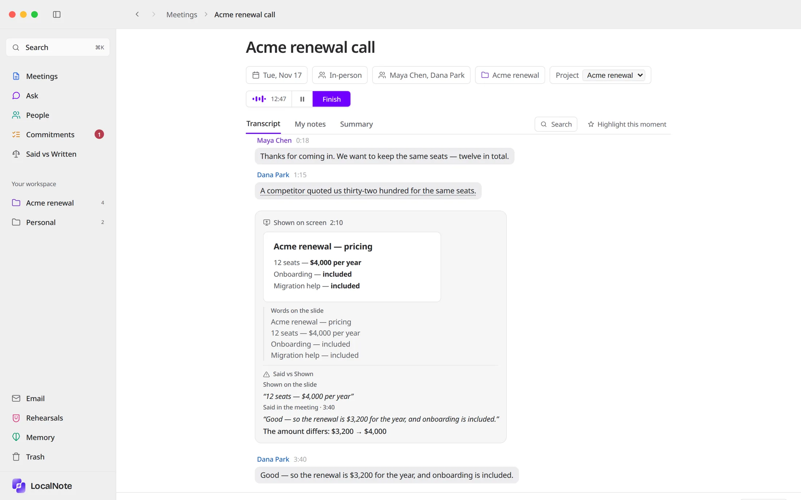

Compare
A Fathom alternative that keeps the record on your machine
Fathom is a polished, generous AI notetaker — free unlimited recordings are hard to argue with. Proofaro is for the people that generosity does not settle: those who need the recording kept on their own computer, transcription that works fully offline after a one-time setup download, and documents checked against what was actually said.

Meet Fathom
Fathom calls itself an AI meeting partner that captures, transcribes and summarises meetings across Zoom, Google Meet, Microsoft Teams and Slack Huddles. It can capture three ways: the Fathom Notetaker joins your call as a visible participant, its Mac desktop app can capture bot-free (in beta), and its iPhone app records in-person conversations. Afterwards you get instant AI summaries, highlight clips and playlists, and Ask Fathom to answer questions across your calls. Notes sync to Salesforce, HubSpot, Slack, Notion and Asana, and the free plan is unusually generous: unlimited recordings and transcriptions at no cost.
The catch is in Fathom's own help centre: everything is stored by Fathom in the US, an internet connection is required, and — in its words — "Offline recording is not available." If your work happens where the internet does not, or the record cannot live on someone else's servers, that settles the choice the other way.
Questions people ask
Fathom is free with unlimited recordings — why switch?
If Fathom's cloud works for you, honestly, it may not be worth switching. The reasons people look at Proofaro are the ones Fathom cannot change: its recordings live in Fathom's US cloud, it needs the internet, and it cannot check a quote or contract against what was said. Proofaro is also free during early access.
Does Fathom work offline?
No. Fathom's help centre says an internet connection is required to capture, and states that offline recording is not available. Proofaro transcribes on your computer, fully offline after a one-time setup download.
Is Fathom really bot-free?
Partly: its Mac desktop app can capture without the Notetaker joining, and that mode is in beta; on Microsoft Teams the Notetaker is the only route. With Proofaro there is no bot on any platform, because capture happens on your machine.
Does Fathom have an Android app?
No — Fathom's mobile app is iPhone only, for in-person capture. Proofaro has no mobile app yet either; it is desktop-only while in early access, and this page will say so until that changes.
Side by side
| Proofaro | Fathom | |
|---|---|---|
| A bot joins your meeting | Never — capture happens on your own computer | The Fathom Notetaker joins as a visible participant — or capture bot-free from the Mac desktop app (in beta); on Teams, capture is bot-only |
| Where transcription happens | On your computer | Processed by Fathom — recordings are stored in Fathom's cloud in the US, and its help centre states an internet connection is required to capture and process |
| Works fully offline | Yes, after a one-time setup download | No — Fathom's help centre states plainly: “Offline recording is not available” |
| The meeting recording | Kept on your computer — replay the exact words any time | Video, audio and transcript kept in Fathom, stored indefinitely until you delete them, with clips and playlists built in |
| Checks documents against what was said | Yes — Said vs Written flags changed numbers, dates and promises, with the original quote as evidence | No equivalent described in Fathom's docs (checked November 2026) |
| Integrations and team tools | Deliberately few — Proofaro works on your machine, not inside your CRM | Salesforce, HubSpot, Slack, Notion, Asana and Zapier, plus Ask Fathom and trackers across team calls |
| Operating systems | Mac, Windows and Linux | Mac and Windows computers; its help centre lists Linux among the platforms it does not support |
| Mobile apps | Not yet — desktop only for now | iPhone app for in-person capture; no Android app |
| Availability | Invite-only early access | Anyone can sign up today — free plan with unlimited recordings and transcriptions |
Fathom details are based on Fathom's public documentation, checked November 2026. Sources: Fathom's flexible capture page (three capture modes; the Notetaker is a visible attendee) and bot-free capture page (Mac desktop app, in beta), its help centre on the iOS app (internet required; “Offline recording is not available”; iOS only), on recording storage (recordings stored indefinitely until deleted) and on supported computers (Linux not supported), and Fathom's pricing page (free plan; unlimited recordings and transcription). Fathom is a trademark of its owner; this page is a comparison, not an affiliation.
Comparing more tools? See the full comparison hub — including Proofaro vs Granola.
When Proofaro is the better fit
You work where Fathom can’t
Fathom’s help centre states it plainly: an internet connection is required, and “Offline recording is not available.” Proofaro was built for exactly those rooms — flights, secure facilities, client sites with no guest Wi-Fi worth trusting. Transcription runs on your computer, fully offline after a one-time setup download, so the meeting is transcribed when it ends, not when the network returns. See offline meeting notes.
Free shouldn’t mean stored forever, elsewhere
Fathom keeps your video, audio and transcripts in its US cloud indefinitely, until you delete them — convenient, and entirely under Fathom’s roof. Proofaro keeps the recording on your computer instead: replay the exact words any time, delete any of it when you choose, and hand over a self-verifying evidence pack if a disagreement ever needs more than your word.
A visible participant changes the call
The Fathom Notetaker joins as a visible participant; the bot-free desktop capture is Mac-only and in beta, and on Microsoft Teams the Notetaker is the only route. People talk differently when a recorder is sitting in the call. With Proofaro there is no bot on any platform — capture happens on your machine, so the participant list stays exactly the people you invited.
Two summaries that never meet
The renewal is agreed at $4,000 with onboarding included; the quote arrives at $4,800, onboarding billed separately. Fathom will summarise the call and summarise the document — and the two summaries sit side by side in its cloud, never compared. Proofaro’s Said vs Written checks the paperwork against the recorded words: changed numbers, dates and promises flagged with the original quote, a response draft prepared for your review, never sent on its own. See commitment tracking.
Before you have to ask Fathom
Fathom’s morning is clips to rewatch and a question for Ask Fathom. Proofaro starts before the question: the day opens with your brief already done, yesterday’s paperwork checked line by line against yesterday’s call, and follow-up drafts waiting in your Morning Queue. You start the day approving and sending — not re-reading threads to remember who said what.
Your meetings mix languages
Plenty of real meetings switch mid-sentence — English with Hindi, English with Spanish. Proofaro locks the transcription language for the whole meeting, so the record stays clean instead of flipping line by line, and summaries can come back in English, Spanish or Hindi. The meeting sounds like your team talks; the notes still read clearly.
Fathom gives you free recordings in its cloud. Proofaro gives you recordings that never leave your computer — and a check on every document that follows them.
Switching from Fathom to Proofaro
What carries over. Fathom keeps your recordings indefinitely until you delete them, so take your time: download the calls that matter before you close anything. Audio you bring to Proofaro can be imported and turned into notes on your computer, and the documents that follow a meeting can be checked against its words.
What your first week looks like. Request an invite, install Proofaro on your Mac, Windows or Linux computer — Linux included, where Fathom does not go — and finish the one-time setup download. Capture happens on that computer with no Notetaker in the call and no connection required, and follow-ups are checked with Said vs Written.
The honest part. Fathom’s free plan is genuinely generous, and if unlimited cloud recordings are all you need, switching buys you little. People switch for the three things Fathom cannot change: offline capture, a record that lives on their own machine, and documents checked against what was said.
Request early access
Proofaro is invite-only while we onboard the first users in small waves. Request an invite and we will write to you at the address you give us.
Free during early access. Available by invitation only. Tell us your email and your operating system — and, if you like, what you do.
After early access: a permanent Free mode keeps your history readable, searchable and exportable forever — and early users get the lowest price Proofaro ever offers, locked while subscribed.